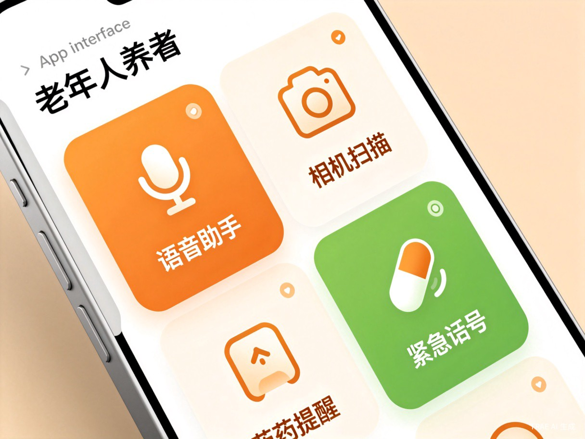
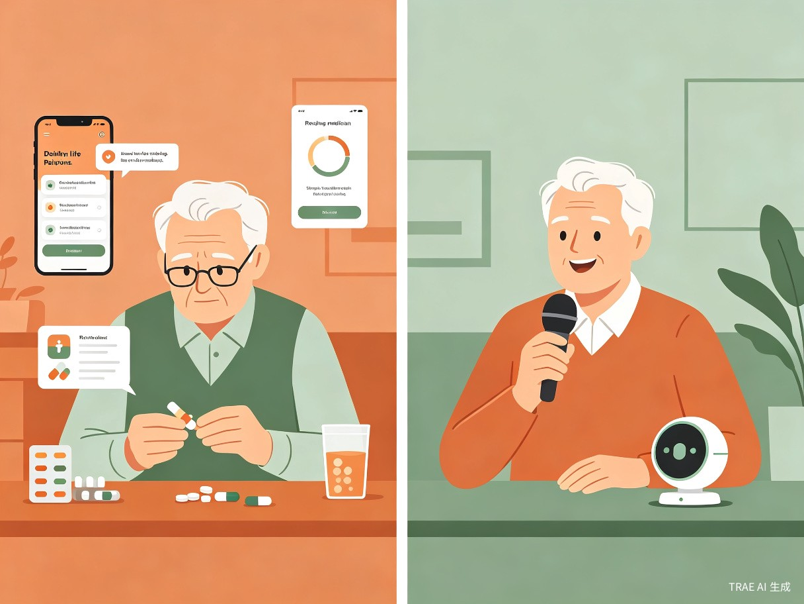

银龄智伴 —— 老人专属AI智能生活助手
中国60岁以上老年人口已超2.8亿，但市面上绝大多数智能产品都是为年轻人设计的——字体太小、操作复杂、功能冗余，导致老人"不会用、不敢用、不想用"。银龄智伴致力于用语音+拍照的极简交互方式，让老人零门槛享受智能科技带来的便利。
我的外婆今年78岁，每次视频通话都要让家人帮忙操作手机；去医院不会用自助挂号机；买菜不会用扫码支付。我意识到，技术进步的红利不应该把老年人抛下。我希望做一个真正"懂老人"的产品，让科技成为他们生活的助手，而不是障碍。
银龄智伴是一款面向老年人的AI智能助手App，核心交互方式为大字语音对话 + 拍照识别，覆盖健康管理、日常生活、紧急求助三大场景，让老人动动嘴、拍拍照就能解决生活中的各种问题。

| 用户类型 | 年龄段 | 特征描述 | 核心需求 |
|---|---|---|---|
| 独居老人 | 65-80岁 | 子女不在身边，日常生活自理 | 健康监测、紧急求助、生活代办 |
| 随迁老人 | 60-75岁 | 随子女迁居陌生城市 | 就医导航、社区融入、方言支持 |
| 慢病管理老人 | 65-85岁 | 患有高血压、糖尿病等慢性病 | 用药提醒、指标记录、复诊预约 |
| 子女（间接用户） | 30-50岁 | 关心父母生活，希望远程守护 | 远程查看、异常告警、亲情连线 |
老人对着手机说"我该吃什么药"，助手语音播报今日用药清单，并自动设置提醒。
拍一拍医院导诊单，助手自动识别科室位置、排队情况，语音导航到正确楼层。
语音说"帮我看看鸡蛋多少钱"，助手识别附近超市价格，或教老人扫码支付。
长按语音键说"我不舒服"，自动拨打120并通知子女，发送定位信息。

中国正加速进入老龄化社会，"数字鸿沟"已成为影响老年人生活质量的重要社会问题。银龄智伴不仅是一个产品，更是推动"科技适老"的积极实践：
中国银发经济规模预计2025年达12万亿，老年智能服务是蓝海赛道
子女为父母购买健康/安全服务的付费意愿强烈，付费转化率高
国家大力推进智慧养老，各地政府有采购智慧养老服务的预算
可对接医药电商、家政服务、养老机构，构建银发服务生态
支持方言识别，老人说"我头晕怎么办"，助手自动分析症状并给出建议或联系医生
拍药品、拍菜单、拍路牌、拍单据，AI自动识别并语音讲解，解决"看不懂"难题
扫描药盒自动录入用药信息，定时语音提醒，记录服药情况并同步给子女
语音触发或一键SOS，自动拨打120、通知紧急联系人、发送精准定位
子女端App可查看父母健康数据、用药记录，接收异常告警，一键视频通话
天气、新闻、养生知识、戏曲相声，语音点播，陪伴老人度过每一天
flowchart TB
subgraph 用户层
A[老人端 App]
B[子女端 App]
end
subgraph 交互层
C[语音识别
方言适配]
D[图像识别
OCR/物体检测]
E[大语言模型
意图理解]
end
subgraph 服务层
F[用药管理]
G[紧急呼救]
H[健康监测]
I[生活服务]
end
subgraph 数据层
J[(用户健康档案)]
K[(知识图谱)]
end
A --> C --> E
A --> D --> E
E --> F --> J
E --> G --> J
E --> H --> J
E --> I --> K
B --> J
| 维度 | 普通App | 银龄智伴 |
|---|---|---|
| 交互方式 | 点击、滑动、输入 | 语音为主、拍照为辅 |
| 界面设计 | 信息密集、字体小 | 超大字体、极简布局 |
| 语言支持 | 标准普通话 | 多方言识别+适配 |
| 功能逻辑 | 功能堆砌 | 场景驱动、主动服务 |
| 情感连接 | 工具属性 | 温暖陪伴、亲情守护 |
报名赛道：AI 应用创意赛道
创意名称：银龄智伴 —— 老人专属AI智能生活助手
团队/个人：个人参赛
作品类型：App 应用创意方案
创作工具：TRAE Work（Auto模式）
本方案由 TRAE Work 辅助生成，旨在用AI技术温暖银发群体，让科技更有温度。